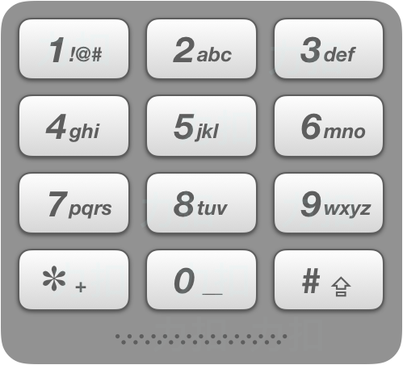

面试题 16.20. T9键盘
建「数字 → 字母」的 T9 映射表，每个单词逐位核对「该字母能否由对应键打出」，全对得上就收下，保持原词序输出。
思路
- 映射表就 10 格：
2→abc, 3→def, 4→ghi, 5→jkl, 6→mno, 7→pqrs, 8→tuv, 9→wxyz；0、1 不映射字母。 - 对每个词逐位检查
map[num[i]]是否包含w[i]，任一位对不上立即淘汰。 - 题面保证
words[i].length == num.length且num只含 2-9，不用处理长度不齐。 - 命中的词按原顺序收进答案即可，规模小（≤500 词 × ≤1000 位），无需字典树。
图解
最优解
1import java.util.*;2 3class Solution {4 public List<String> getValidT9Words(String num, String[] words) {5 // T9 键盘：数字 2-9 对应的字母；0、1 不映射任何字母（题面保证不出现）6 String[] map = {"", "", "abc", "def", "ghi", "jkl", "mno", "pqrs", "tuv", "wxyz"};7 List<String> ans = new ArrayList<>();8 for (String w : words) {9 boolean ok = true;10 // 逐位核对：该位字母必须能由对应键打出11 for (int i = 0; i < num.length() && ok; i++) {12 if (map[num.charAt(i) - '0'].indexOf(w.charAt(i)) < 0) ok = false;13 }14 if (ok) ans.add(w);15 }16 return ans;17 }18}题目
在老式手机上，用户通过数字键盘输入，手机将提供与这些数字相匹配的单词列表。每个数字映射到0至4个字母。给定一个数字序列，实现一个算法来返回匹配单词的列表。你会得到一张含有有效单词的列表。映射如下图所示：

示例 1：
输入：num = "8733", words = ["tree", "used"] 输出：["tree", "used"]
示例 2：
输入：num = "2", words = ["a", "b", "c", "d"] 输出：["a", "b", "c"]
提示：
num.length <= 1000words.length <= 500words[i].length == num.lengthnum中不会出现 0, 1 这两个数字
题面取自力扣当前版本。
数据快照 2026-11-04。题面版权归力扣所有，本站点仅供本人学习使用，请勿对外发布。